La première étape pour élucider les intérêts de la toile pour l'Homme est de comprendre sa constitution, que ce soit à petite échelle en mettant en lumière les composants de la soie ou à plus grande échelle par l’analyse du tissage de la toile.
1Production et nature de la soie
QUESTION
De quoi est composé un fil d’araignée?
De petits cristaux très solides
De protéines
D’un assemblage très dense de végétaux
Cette partie est interactive : cliquez sur la lettre correspondant à votre choix pour lever le voile sur la question!
Bien que toutes les araignées ne tissent pas, cette espèce est largement connue pour ses fils qui hantent les maisons. Ce fil est une soie au même titre que celle produite par certaines chenilles, mais il présente bon nombre de différences. La question élémentaire qui se pose est la suivante : Quelle est la constitution de la soie du fil d’araignée? Nous avons alors émis l’hypothèse que l'araignée la produisait à partir de protéines, ces dernières étant des composantes majeures dans le monde du vivant. Pour la vérifier nous avons mis en œuvre le test du biuret dont nous avons détaillé le protocole dans cette section de l'annexe. Elle met en évidence la présence de liaisons peptidiques (quatre au minimum) entre les protéines. Cela se fait par un changement de couleur après avoir versé quelques gouttes d’un réactif. On l’appelle le “réactif au biuret” car le biuret est la plus petite molécule qui le fait réagir. Il se forme lorsque des ions cuivre II sont présents dans un milieu basique comme de la soude, mais nous avons pu nous en procurer un flacon déjà prêt.
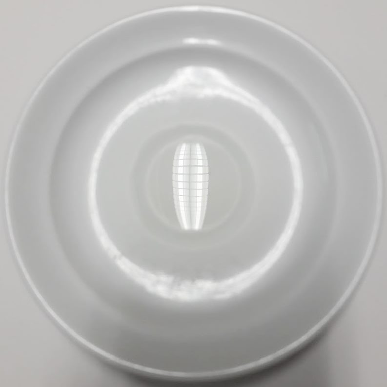
Témoin négatif
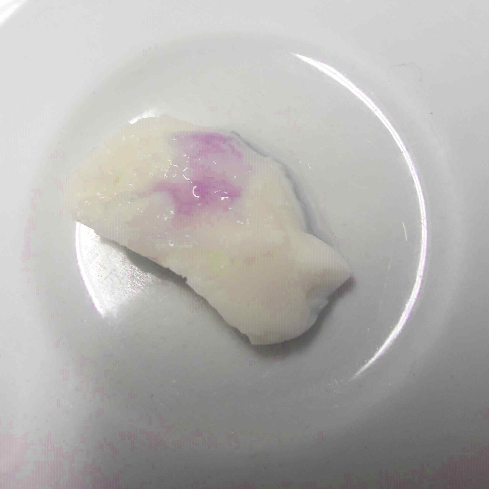
Témoin positif
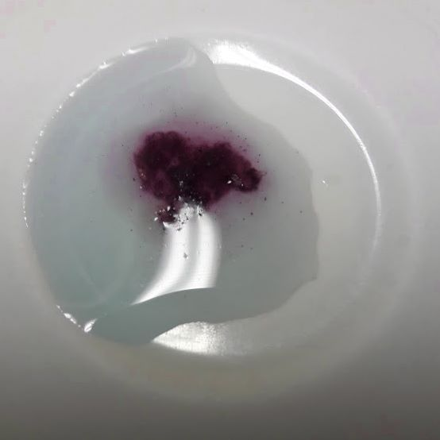
Echantillon de soie
Le témoin négatif a été réalisé avec de l’eau pour assurer la nécessité de protéines pour le déroulement de la réaction. Le témoin positif, utilise un morceau blanc d’œuf que nous savons riche en protéine, il confirme la réaction avec la formation d’une tâche violette. Résultat, la couleur de notre échantillon de soie a bel et bien tourné au violet, bien qu’il ait fallu verser plus de réactif pour voir la couleur apparaître. La soie que produit l’araignée est donc effectivement constituée de protéines, même si la concentration est moindre que dans l'œuf. Des recherches plus poussées ont montré que cette soie contient deux protéines principales : la fibroïne et la séricine, dont nous verrons le rôle dans les propriétés de cette soie. De la matière grasse et de l'eau contribuent également à constituer l'ensemble. Pour former cette soie, l'araignée dispose de glandes séricigènes dans son abdomen qui produisent un liquide contenant les deux protéines. On dénombre six types de glandes différentes mais seulement deux sont sollicitées en même temps. Ce procédé permet de produire plusieurs soies, aux utilisations diverses :
Les glandes ampullacées majeures servent à faire les composants solides sur lesquels l'araignée repose dans sa toile. Il s’agit d’un fil non collant mais stable.
Les glandes ampullacées mineures sont comme leur nom l'indique bien moins utilisées, leur rôle se cantonne à l'ébauche de la toile
Les glandes agrégées et les flagelliformes forment le fil collant qui sert à capturer les insectes dans la toile.
Les glandes tubuliformes créent la soie qui forme des cocons pour emballer les œufs. C’est ce qui est considéré comme l’usage principal de la soie d’un point de vue évolutif puisque les premières araignées ne tissaient pas de toile.
Les glandes aciniformes produisent la soie avec laquelle l'araignée emmaillote ses proies pour les stocker et les dévorer.
Ce sont les principaux usages mais d’autres types de soie existent également, elles utilisent un fil de sécurité, aussi appelé fil de traîne, pour ne pas tomber : elles peuvent contrôler leurs chutes en se laisser descendre. C’est en effet avec celui-là qu’on a l’image d’une araignée qui descend du plafond. Pouvoir sécréter a volonté différentes soies est un atout de taille, même dans des situations surprenantes, comme pour recueillir le sperme du mâle qu’elle aspire ensuite. Le schéma ci-dessous récapitule plus visuellement la variété des soies et de leurs utilisations.
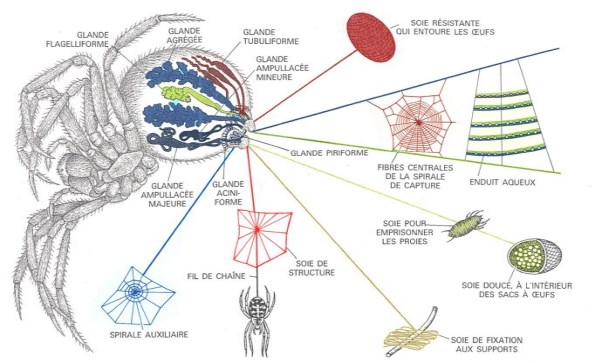
Les glandes de l'araignée et les soies correspondantes
semanticscholar.org
Le liquide qu'elles produisent circule dans de minuscules tubes appelés «filières». Dans ces derniers, on observe des évolutions de l'acidité ce qui permet une cristallisation du liquide, une forte déshydratation et une augmentation de la pression. Une fois que cette pression est suffisamment forte, les protéines se lient entre elles et forment le fil de soie. Le fil se solidifie au fur et à mesure de ces échanges. Une fois sorti, l'araignée le file avec sa patte. Nous avons donc la soie d'araignée prête à être utilisée, sa vitesse de production varie beaucoup en fonction de la soie en question et de l'araignée, mais elle est nettement inférieure à celle d’autres espèces productrices de soie comme les vers à soie. Chaque fibre de soie obtenue est composée en réalité de près de 2500 nano-brins qui sont des minuscules fils arrangés parallèlement à la manière d'un câble. Comme ils sont les uns à côté des autres ils formeraient d'ailleurs une soie plus plate que cylindrique contrairement à ce que l'on pourrait penser. Nous avons essayé de déterminer un ordre de grandeur pour le diamètre d'un fil de soie d'araignée, nous avons pour cela réalisé une observation au microscope optique. Il est très difficile de dire si notre échantillon était bien un unique fil de soie. Voici les photos obtenues :
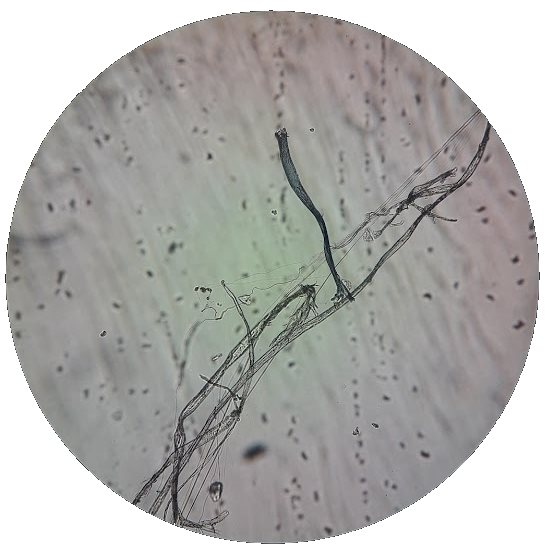
Fil de soie d'araginée au microscope optique, grossissement x400
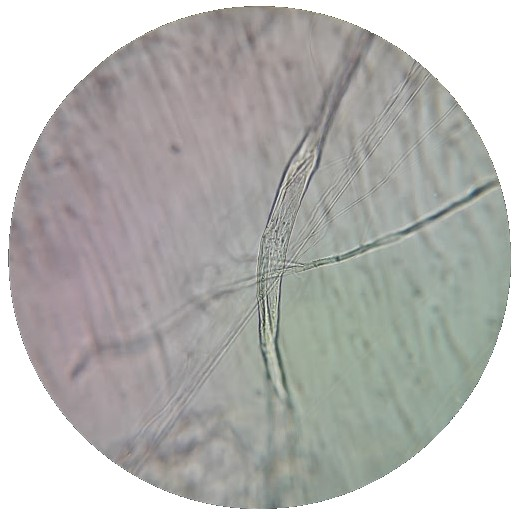
Fil de soie d'araginée au microscope optique, grossissement x600
En considérant que le cliché de droite représente un fil, nous avons calculé que le diamètre d'un fil est de l'ordre de dix micromètres. Le diamètre réel varie selon les sources, et tous les autres facteurs vus précédement, mais notre ordre de grandeur semble être le bon. Il est comparable à celui des cheveux qui trourne autour de 50 à 100µm.
2La construction de la structure de la toile
QUESTION
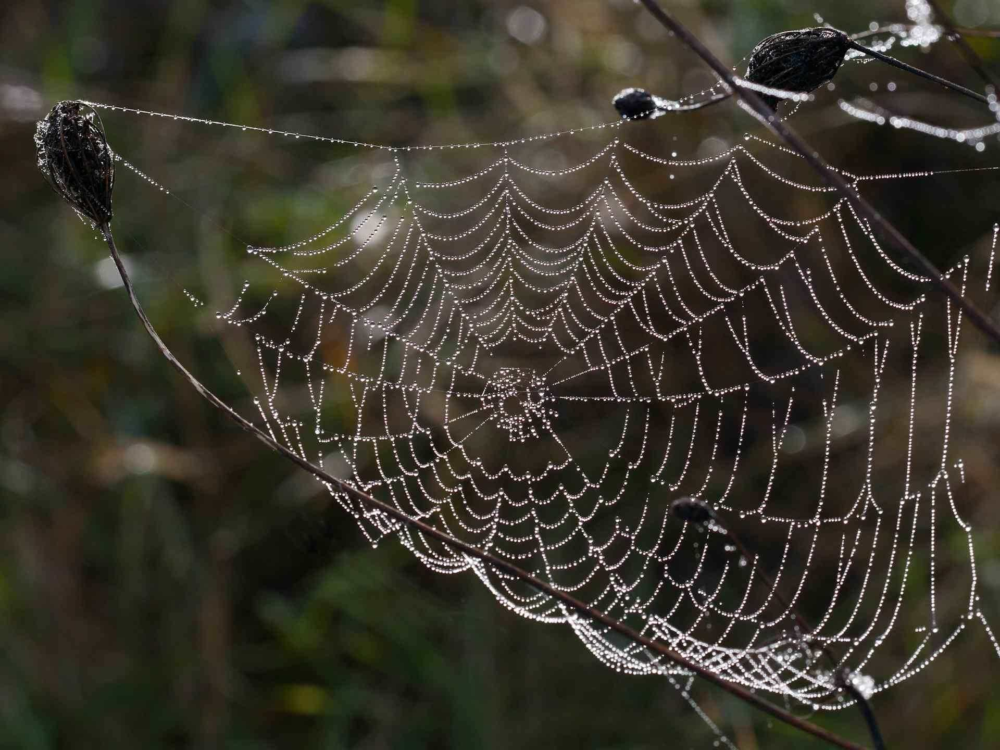
Une toile dite "géométrique"
lesvoiesdelame.com
Combien de temps faut-il environ à une araignée pour construire une toile comme celle ci-contre?
L’araignée respecte un procédé méthodique qui prend environ une heure
Il faut une dizaine de minutes pour tendre les quelques fils de la toile
La toile est faite anarchiquement, la durée de fabrication est aléatoire
On recense à ce jour pas moins de 47 000 espèces d'araignées, mais toutes ne construisent pas de toile. Les toiles qu'elles produisent témoignent tout de même d'une grande diversité, si bien qu’on les a regroupées en deux grands types de toiles. D'une part, les toiles géométriques ou régulières, construites dans un plan, et ayant une forme ronde ou triangulaire. Ce sont les plus iconiques, mais pas forcément les plus représentées, puisque qu'on estime que seulement 3000 espèces tissent ce type de toile. Les autres araignées construisent, elles, des toiles informes dites irrégulières. Ce sont notamment les araignées aux pattes longues, que l'on rencontre souvent dans nos maisons, mais un bon nombre d'espèces tissent des toiles de cette manière. Ces toiles sont des pièges tridimensionnels constitués d’un enchevêtrement de fils désordonnés, tenant debout grâce à de nombreux points d’attache à son environnement. A l’inverse des autres toiles, celles-ci ne se basent pas sur une soie gluante pour retenir leurs proies, mais plutôt sur sa structure dans laquelle les insectes peuvent facilement s’entremêler.
Nous avons fait le choix de nous intéresser plus particulièrement aux toiles du premier type, car leur géométrie leur confère des propriétés supplémentaires, mais également car elles sont plus similaires d'une espèce à l'autre, tandis qu'il existe une grande variété de toiles irrégulières. Ces toiles géométriques sont dites orbiculaires par les scientifiques, car elles décrivent une forme circulaire en deux dimensions.
Pour partir d'un exemple concret, prenons l'exemple de l'épeire diadème, une des plus fréquente dans nos jardins. Sa rigueur permet de bien comprendre le processus de tissage des araignées orbitèles : elle construit sa toile en une heure environ en produisant au total plusieurs dizaines de mètres de fil de soie. On peut décrire le tissage par un certain nombre d'étapes communes à d’autres araignées, elles sont reprises ici avec pour illustration une maquette que nous avons réalisée :
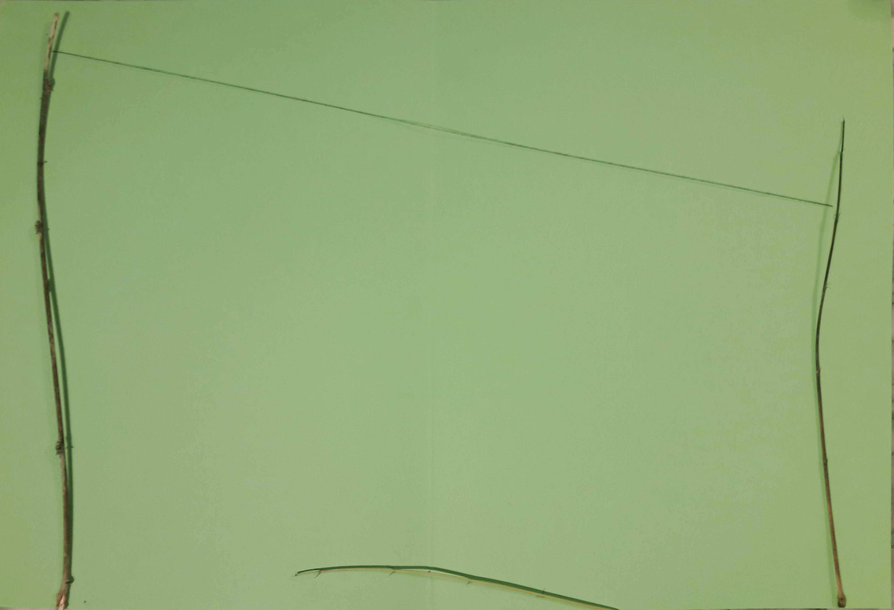
Elle doit d'abord tendre un fil entre deux points d'ancrage fixes. Elle adopte pour se faire une technique très originale minimisant l'effort : le fil est si léger qu'il est porté au gré du vent à des distances respectables, où il s'accroche à la moindre disparité du terrain, une branche, un brin d'herbe… Une fois tendu, ce fil soutiendra l’ensemble de la structure, l’araignée opte donc pour un fil non collant mais très résistant qu’elle parcourt plusieurs fois pour le renforcer.
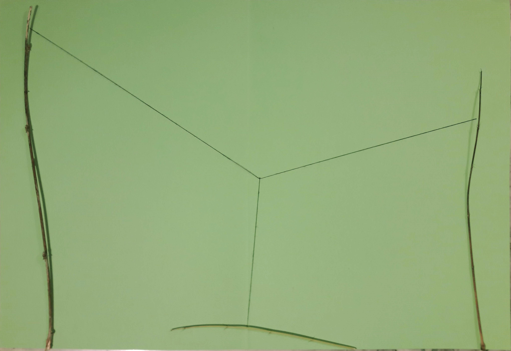
Du milieu de ce fil, l'araignée descend avec un nouveau fil pour atteindre un troisième point nécessaire à la construction. Le fil du haut se tend pour former la structure porteuse, un « Y », dont le point central définit le centre de la toile.
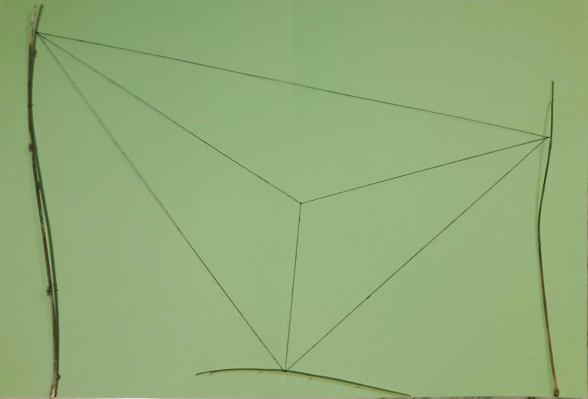
Elle va ensuite relier les extrémités de ce Y par des fils tendus, qui définissent le cadre de la toile. On obtient donc avec un minimum de points d’ancrage un triangle, mais en pratique, les araignées accrochent leur fil à d’autres points de leur environnement, ce qui aboutit à des polygones de plus ou moins de côtés que l’on appelle cadres.
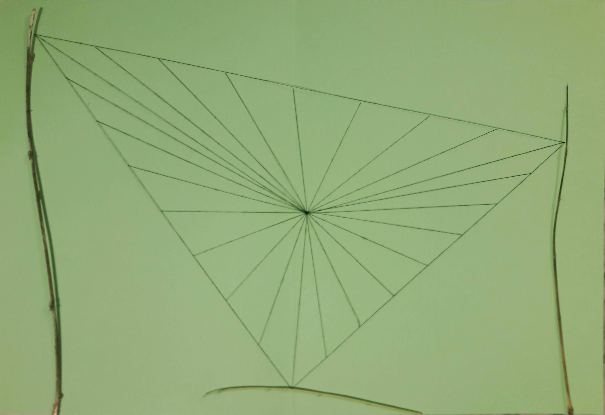
L'araignée suit ensuite un protocole très mathématique ; elle tisse entre une vingtaine et une quarantaine de rayons reliant le centre de la toile aux côtés du cadre. Elle commence par les médianes des triangles qui sont les plus importantes puisqu'elles soutiennent des pans du cadre éloignés des points d'accroche.
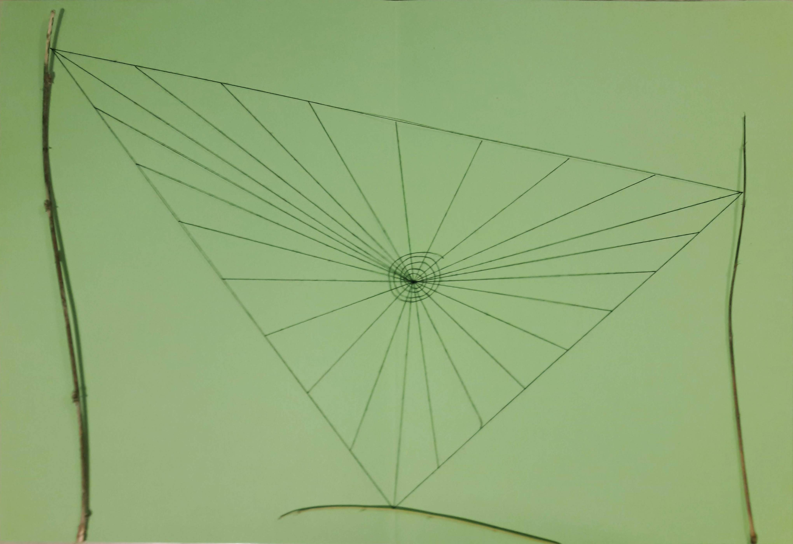
Au cours de cette étape, la fileuse tisse un moyeu, une spirale très serrée autour du centre. C’est ici qu’elle guettera ses proies, mais ce fil résistant sert aussi à solidariser l’ensemble des rayons pour assurer le tissage du reste de la toile.
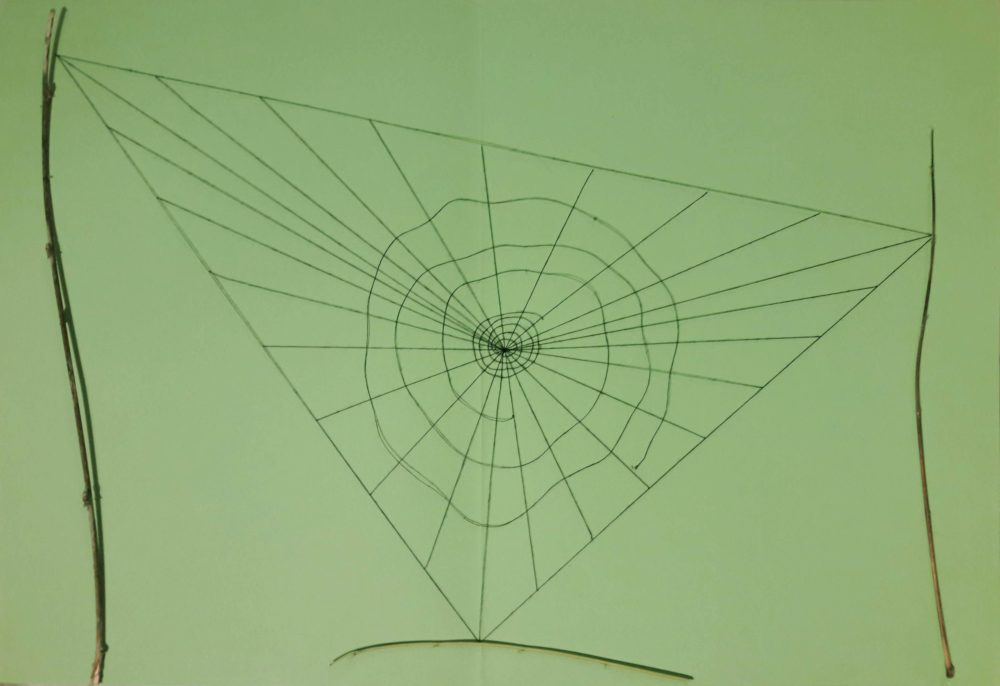
L’araignée s’éloigne alors du moyeu pour tisser une nouvelle spirale, plus grande et s’écartant vers l’extérieur. L’intérêt de cette spirale est de supporter le poids de l’araignée le temps de la mise en place du piège. On peut comparer cette structure à un échafaudage, son fil n’est donc pas collant et peu resserré. Elle utilise pour garder le bon espacement entre chaque spire une technique originale : ses pattes font office de compas pour mesurer et reporter l’écartement.
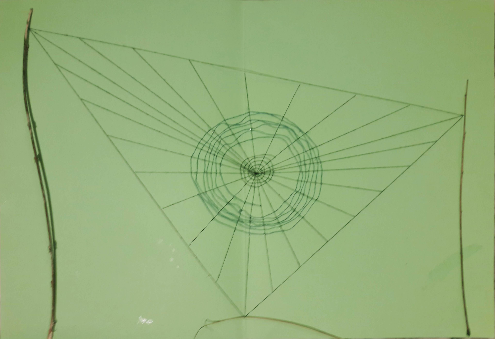
L’araignée entreprend finalement la mise en place du piège. Elle repart cette fois de l’extérieur en mangeant sa spirale provisoire pour en réutiliser ses protéines. Elle la remplace par une autre bien plus serrée, elle aussi constituée d’un seul et long fil. La soie de ce fil est tout à fait différente : si elle est moins solide et plus fine, elle est très collante.
On peut noter que les orbitèles s’attèlent en général à la reconstruction de leur toile tous les jours, afin de garantir l’efficacité de la substance collante qui est dégradée par les poussières et autres facteurs environnementaux. Elles ont donc un piège particulièrement ingénieux qui mêle optimisation des matériaux et des formes.